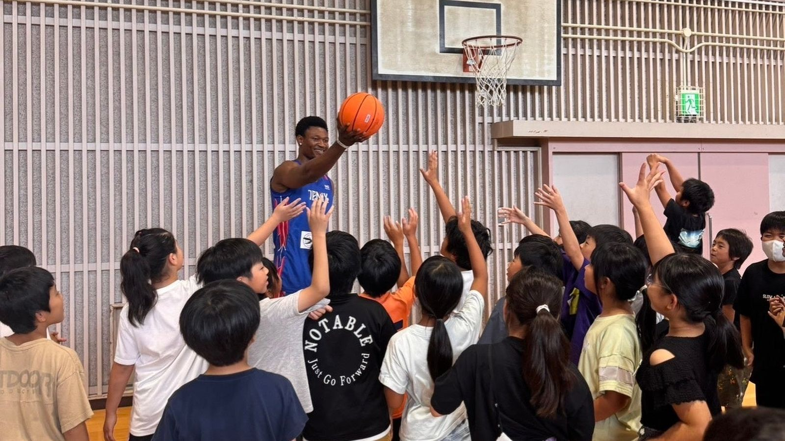

びんご福山デニックス、 9月12日・13日にホームゲーム —— 観戦無料、九州電力・富士通と対戦
広島県福山市を拠点にSB1リーグで戦うびんご福山デニックスは、2026年9月12日（土）・13日（日）の2日間、エフピコアリーナふくやまで観戦無料のホームゲームを開催すると発表した。

9月12日は九州電力、13日は富士通と対戦
2日間の対戦相手はそれぞれ異なる。9月12日（土）は16時開始で九州電力(福岡)と、9月13日（日）は15時30分開始で富士通(神奈川)と対戦する。入場料は無料で、「沸け！FUKUYAMA」を合言葉に、バスケットボールファンだけでなく子どもから大人まで地域の人々が楽しめる2日間を目指すという。
SB2を全勝優勝しSB1へ昇格、目指すはBリーグ入り
デニックスは前シーズン、SB2を全勝で優勝しSB1へ昇格。今シーズンはさらに高いレベルの舞台で戦いながら、将来的なBリーグ参入を目指して活動しているという。
来場者には先着1000名にプレゼントも
両日とも先着1000名を対象にプレゼントが用意されており、1日目はキーホルダー、2日目は記念品（内容はシークレット）が配られる。公式Instagramと公式LINEのフォローも呼びかけている。
学校訪問など、地域に根ざした活動
デニックスは試合の勝利だけを目的とせず、学校訪問やバスケットボール教室、地域イベントへの参加、交通安全・防犯に関する啓発活動など、地域に根差した活動にも力を入れているという。掲げるスローガンは「スポーツで備後の未来を創る」。福山・備後地域を代表するクラブとしての成長を目指している。
出典: 株式会社びんご福山デニックスプレスリリース「びんご福山デニックス、9月12日・13日に福山ホームゲーム開催」（PR TIMES・2026年8月22日）
https://prtimes.jp/main/html/rd/p/000000003.000185925.html